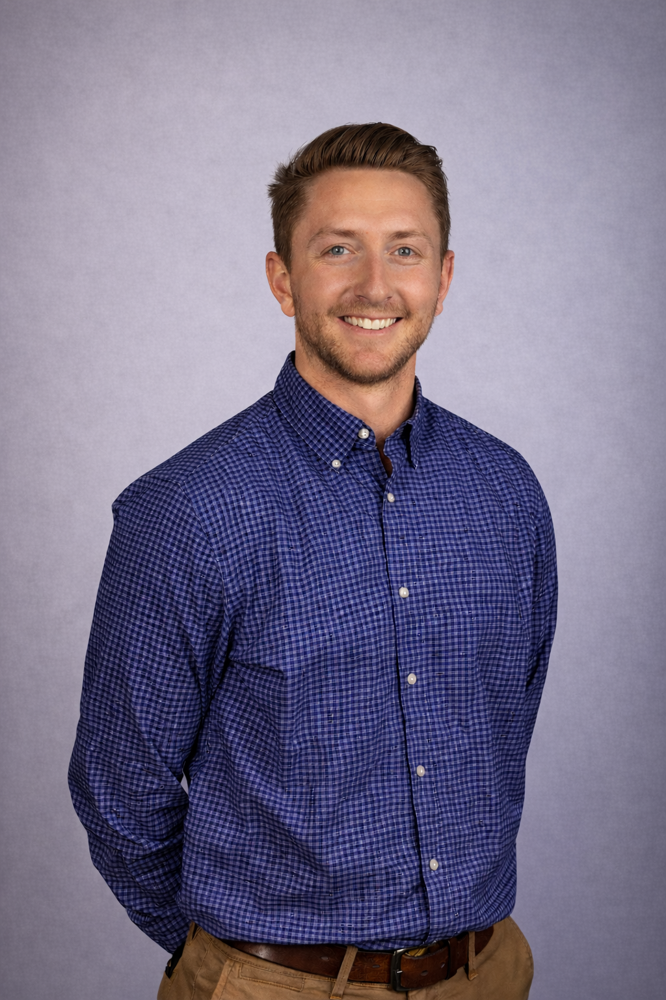
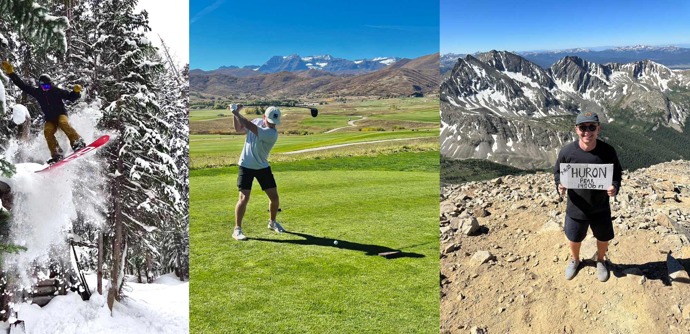
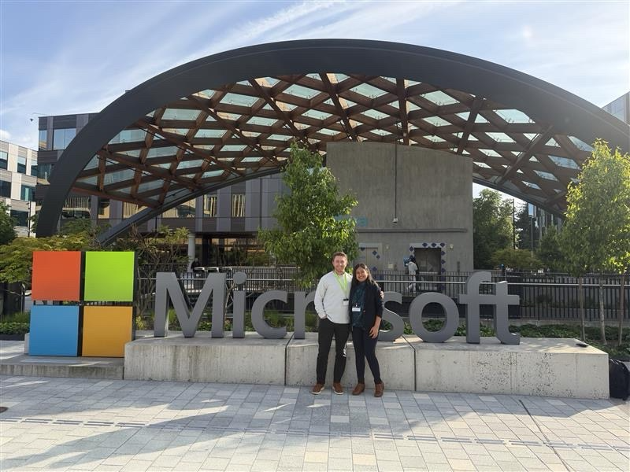

I turn complex revenue processes into CRM systems people can actually use.
I work across Salesforce, Microsoft Dynamics 365 and the revenue technology ecosystem around them—connecting business process, solution design and hands-on platform delivery. I enjoy understanding how teams work and bringing CRM, automation, data and integrations together to make that work easier.

Making systems work better for the people using them.
I enjoy getting into the details of how a business works, figuring out where things get complicated, and turning that understanding into something useful. Here’s where I put that into practice.
From business need to working solution.
I work with teams to understand what they need, then design and build it in Salesforce or Dynamics 365—from the way data is organized to the forms, workflows and guidance people use every day.
Seeing how the pieces fit together.
CRM is one part of a larger process. I look at how sales, prospecting, marketing, analytics and legal tools support that process—and where better data flow or a clearer handoff can help teams work together.
Less chasing. More clarity.
I turn spreadsheet calculations, scattered approvals and manual follow-up into structured workflows. Alongside that, I build reporting and data controls that help teams see what’s happening and trust the information they’re using.
Taking a good idea further.
When standard configuration falls short, I use AI tools to help build custom interfaces, targeted code and data utilities. I define what needs to happen, then test and refine the solution in the system where it will be used.
Outside of work, I’m usually outside.
Outside of work, I’m usually outside.
I grew up in Nebraska, where sports were a big part of my life. I spent most of my time on a soccer field and eventually played at Nebraska Wesleyan. I’ve always liked the competition, being part of a team and having something to keep getting better at.
After college, I traded Nebraska for Colorado and moved to Denver in 2019. The mountains were a big part of the draw, and they still are. Outside of work, you’ll usually find me golfing, snowboarding, camping or hiking—basically anything that gets me outside and gives me something new to take on.

Finding my fit in business and technology.
I studied accounting in college, but I’ve always been the person who wants to understand how something works, why a process feels harder than it should and whether there’s a better way to do it.
When I was looking for opportunities that could get me to Denver after graduation, I came across a Revenue Operations role at CSG. It wasn’t what I went to school for, but once I got into Salesforce and business systems, it clicked. The work sits at the intersection of process, technology, problem solving and people—which fit me extremely well.
From there, reporting and process improvement grew into Salesforce solution design, workflow automation, approvals, custom applications and data migrations—and eventually broader CRM modernization and an enterprise transition to Dynamics 365 and the Microsoft Power Platform.
Today, CRM is still the core of my experience, but I work across the wider revenue technology ecosystem around it: sales, prospecting, marketing, analytics, legal and collaboration platforms, plus the data, workflows and handoffs that connect them. When native platform capabilities fall short, I also use AI-assisted development to prototype or extend solutions, then test, debug and refine them in the real business-system context.

Projects, systems & experience
7+ years across CRM solutions and revenue technology—from workflow automation and custom applications to enterprise platform transformation.
Business context, translated into systems.
I’m most useful where a process is complicated, cross-functional or not working well. The goal is cleaner handoffs, less manual work, better data and systems people actually adopt.
Understand the real process
Lead discovery across the teams involved to understand the workflow, pain points, dependencies and exceptions behind the request.
Design the system
Translate business needs into practical CRM data models, automation, approvals, user experiences, controls and connected handoffs.
Build and improve
Configure Salesforce and Dynamics directly, then extend them with AI-assisted development when native tools are not enough.
Make it usable
Test with real users, refine edge cases, document the design and keep improving the system after launch.
Projects and case studies
Examples spanning CRM transformation, workflow automation, revenue systems and data architecture. Details are generalized to protect internal systems and proprietary information.
Experience & education
My path through revenue operations, solution design and platform ownership.
CRM solutions and revenue technology professional with 7+ years of experience translating complex business processes into scalable systems across Salesforce, Dynamics 365 and the surrounding revenue technology ecosystem. I bridge revenue stakeholders and technical teams across discovery, solution design, workflow automation, data, testing, governance and enablement.
- Lead Salesforce-to-Dynamics 365 transformation work spanning process redesign, Dataverse, Power Automate, migration, testing and governance, partnering with external consultants while owning internal requirements and solution refinement.
- Lead discovery and design across Sales, Finance, Legal, Presales, Delivery, Marketing Operations and IT, translating operating needs into scalable CRM data models and workflows.
- Extend Dynamics with AI-assisted JavaScript, HTML web resources and Python utilities when native configuration is not enough, then test, debug and refine those outputs in context.
- Owned Salesforce solution design across custom data models, Flow automation, approvals, reporting and governance.
- Designed and built a CRM-native revenue model, guided presales intake and multi-step solution/pricing approval workflows.
- Led stakeholder workshops, UAT, documentation, enablement and change management across global teams.
- Built and automated executive sales reporting and analytics.
- Managed acquired-company CRM migration involving tens of thousands of records.
- Designed and built a custom Salesforce application supporting M&A strategy and executive visibility.
- MBA, Accounting focus · 2018
- BS Accounting, Finance minor · 2017